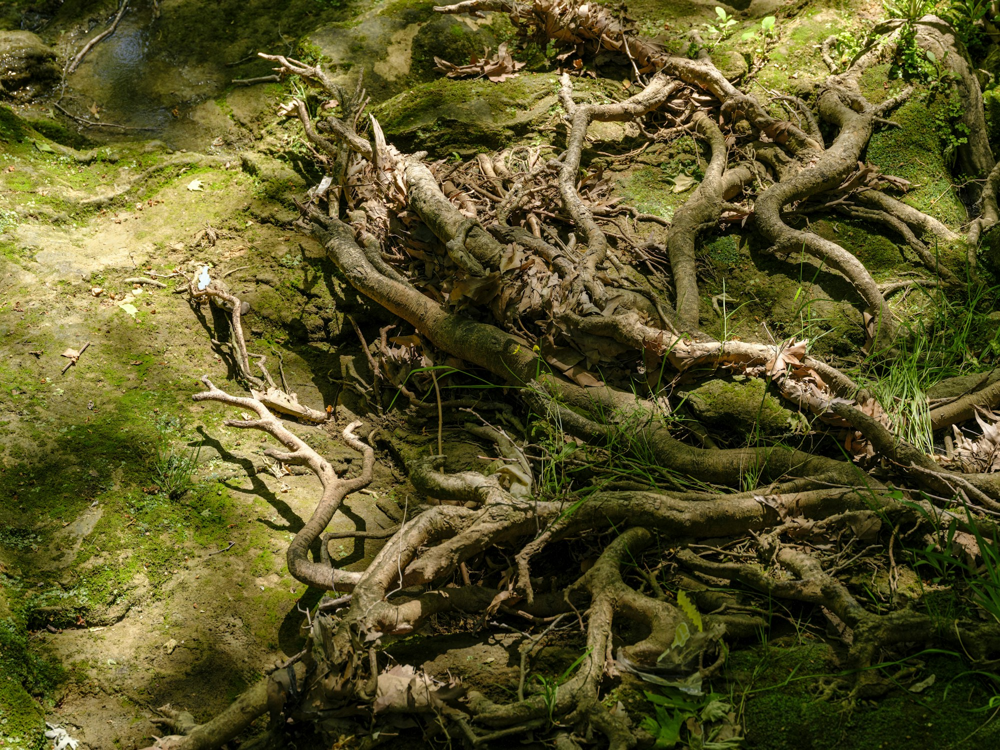
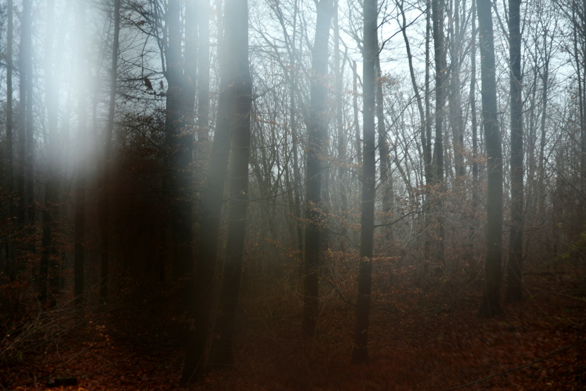

01
Canopy
A living ceiling that intercepts sunlight and rainfall.
A field guide to the wild
Ancient ecosystems shaped by rain, light, and time.
Discover the wild ↓01 / The environment
A forest begins above your head and continues beneath your feet. Canopy, understory, and soil are parts of one intricate system.
Leaves gather light. Roots draw water from the ground. Fallen wood becomes shelter and food as fungi and other decomposers return nutrients to the soil.

02 / In perspective
The canopy changes how light and rain reach the forest floor. Below is, shade and moisture create small, distinct worlds. A gap left by one fallen tree can begin a new succession of life.
03 / A connected system
01
A living ceiling that intercepts sunlight and rainfall.
02
A quieter world of filtered light and patient growth.
03
Decomposition returns the materials of life to circulation.
04 / Field study
In seasonal woodland, falling leaves let more light reach the ground. Leaf litter decomposers, returning nutrients to the soil.
Branches, trunks, and fallen material offer different shelter and access to light and moisture.

05 / Look closer
Dead wood remains part of the living system. It provides habitat and hold organic matter that the decomposers gradually break down. Nutrients are returned to circulation over time.
A gap in the canopy changes the light and moisture reaching the ground. Seedlings and understory plants may respond, while the fallen tree creates new sheltered surfaces. The outcome depends on the forest, the size of the opening, and the surrounding conditions.
Rainfall, temperature, soils, altitude, and disturbance shape very different forests. A tropical forest and a northern conifer forest do not follow the same seasonal rhythm. Looking at the understory and ground layer often reveals differences that a distant view of the canopy misses.
Further reading:US Forest Service/Wood and forest soils ↗
Continue exploring / 03
Desert ↗